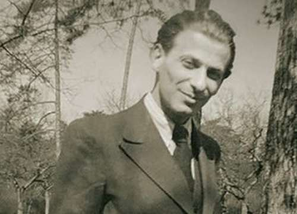
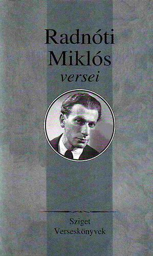

Élete
A mai újlipótvárosi Kádár utca 8.-ban, asszimilált zsidó családban született. Születése édesanyja, Grosz Ilona (1881–1909) és utónevet nem kapott fiú ikertestvére életébe került. Édesapja, Glatter Jakab (1874–1921) kereskedő (a kornak megfelelő szóhasználattal: kereskedelmi utazó) volt. Egy nővére volt, Klára
1915-től 1919-ig a lipótvárosi Szemere utcai elemi iskolába (a Falk Miksa utca 7. szám alatt lakásukhoz közel) járt. 1919-től 1923-ig a budapesti 5. kerületi Magyar Királyi Állami Bolyai Reáliskolában folytatott alsófokú középiskolai tanulmányokat, majd 1923-tól 1927-ig a 6. kerületi Izabella utcai Székesfővárosi Községi Négyévfolyamú, 1927-től br. Wesselényi Miklós Fiú Felső Kereskedelmi Iskola (ma az ELTE Pedagógiai és Pszichológiai Kar Izabella utcai épülete) tanulója volt, 1927. június 11-én kereskedelmi érettségit tett. Diákkorában kiváló atléta volt, több versenyen is érmet nyert és a labdarúgásban is jeleskedett.
1921. július 21-én agyvérzésben meghalt édesapja. Radnóti csak ekkor tudta meg, hogy az őt felnevelő asszony nem az édesanyja, és testvére, Ágika, a féltestvére. Nagynénje nem tudta felnevelni, így anyai nagybátyjához, Grosz Dezső vagyonos textilkereskedőhöz került, akit a Budapest Főváros Árvaszék 1921. október 20-án nevezett ki gyámjának. Radnóti a kívánságára ment kereskedelmi iskolába, hogy cégét majd vihesse tovább, mikor nagybátyja már nem tudja.
1930. szeptember 11-én érkezett meg Szegedre, s másnap be is iratkozott a Szegedi Ferenc József Tudományegyetem bölcsészeti karának magyar–francia szakára. 1930-tól 1934-ig Szegeden lakott szerényebb hónapos szobákban, amelyek alaprajzát Gyarmati Fanninak elküldte levélben.
1934 májusában sikeres doktori szigorlatot tett. Júniusban summa cum laude minősítéssel a bölcsészettudományok doktorává avatták. Kaffka Margit művészi fejlődése című doktori értekezését az egyetem Magyar Irodalomtörténeti Intézete és a Művészeti Kollégium is kiadta. Elkészítette francia szakdolgozatát, majd Müller Lajos nyomdász jóvoltából a Gyarmati Könyvnyomtató Műhelyben külön kötetben is megjelent Ének a négerről, aki a városba ment című költeménye. A Nyugat 3. nemzedéke munkatársa lett.
1940. szeptember 9-én kezdte meg első munkaszolgálatát a IX. kolozsvári hadtestparancsnokság X. munkaszolgálatos zászlóaljában, a 209/16. munkásszázadban. Leveleit ekkor a következőképpen címezte: Szinérváralja 243. Mu. Vez. Csoport 209/16. különleges munkásszázad. Bevonult Isaszegre, majd innen ment tovább Veresegyház, Szada, Gödöllő, a partiumi Nagykároly érintésével Szinérváraljára, ahová október 5-én érkezett meg, majd folytatták útjukat Szamosveresmartra.
1942. március 31-én a Rózsavölgyi és Társa céggel megállapodást kötött, hogy La Fontaine 15 meséjét magyarra fordítja. Henry de Montherlant Lányok című regényének első két kötetét Radnóti lefordította (ez 1942-ben meg is jelent Cserépfalvi kiadásában), a harmadik kötethez azonban nem kezdett már hozzá, mivel akkor második munkaszolgálatára hívták be, ami 1942. július 1-jén vette kezdetét.
Szentendrére kellett bevonulnia, egy ideig itt állomásozott, míg július 13-án el nem indultak.
Augusztus elején elszállították a Lager Rhönbe, hogy fogfájását kezelhessék. Augusztus 29-én már közeledett a szovjet hadsereg és a jugoszláv partizánok. A támadások elől, erőltetett menetben küldték a Lager Heidenau foglyait a Lager Brünnbe.
A már járni sem tudó Radnótit a győri kórházba irányították. Mivel a várost a szövetségesek éppen szőnyegbombázták, így rengeteg súlyos sebesült és halálos áldozat lett a romok alatt. Emiatt az intézmény nem tudta fogadni, elküldték. A beteg munkaszolgálatosokat – köztük Radnótit – egyetlen győri kórház sem fogadta be. Halálának pontos körülményei nem teljesen ismertek, de egyes források szerint Tálas András hadapródőrmester parancsára egy négyfős keret (Bodor Sándor, Kunos Sándor, Malakuczi János, Reszegi István) 1944. november 4-én vagy november 9-én Abda község határában, a Rábca partján lőtte agyon a végsőkig kimerült Radnóti Miklóst, 21 társával együtt. A negyedik Razglednica sorai „Tarkólövés. – Így végzed hát te is…” az ő végzetét is előrevetítették. Az áldozatokat a Győrhöz közeli Abda község határában tömegsírba temették.

Fontosabb versei
- POGÁNY KÖSZÖNTŐ
- OKTÓBERI VÁZLAT
- ARCKÉP
- VIHAR ELŐTT
- ALKONYI ELÉGIA
- VÁLTOZÓ TÁJ
- HÁBORÚS NAPLÓ
- TEGNAP ÉS MA
- ŐRIZZ ÉS VÉDJ
- SEM EMLÉK SEM VARÁZSLAT
